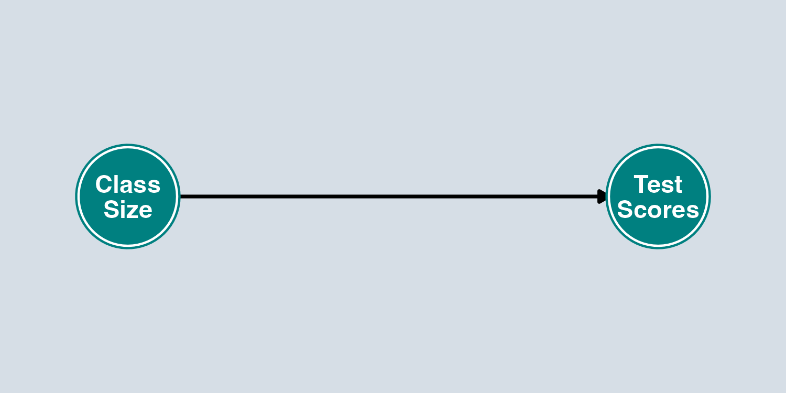
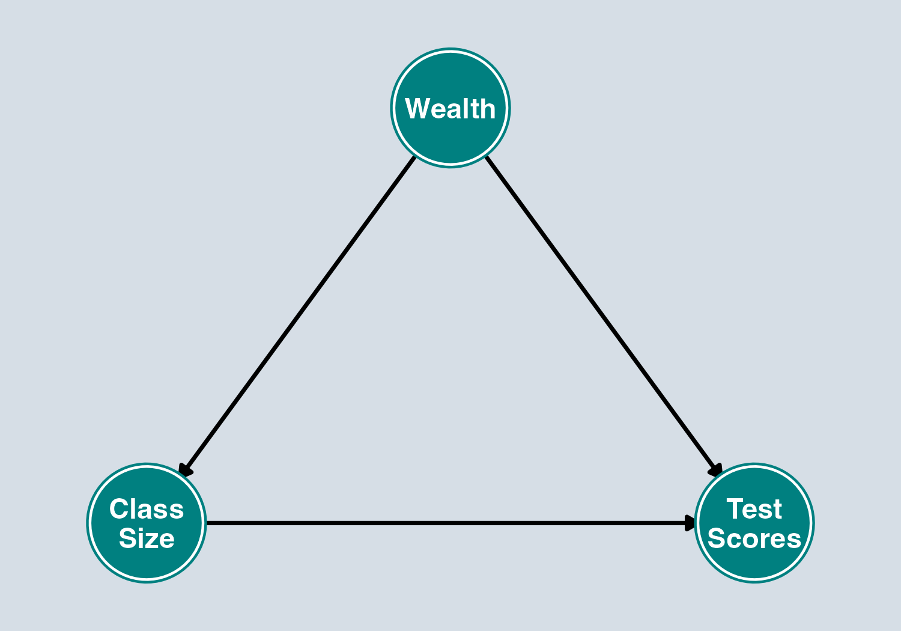
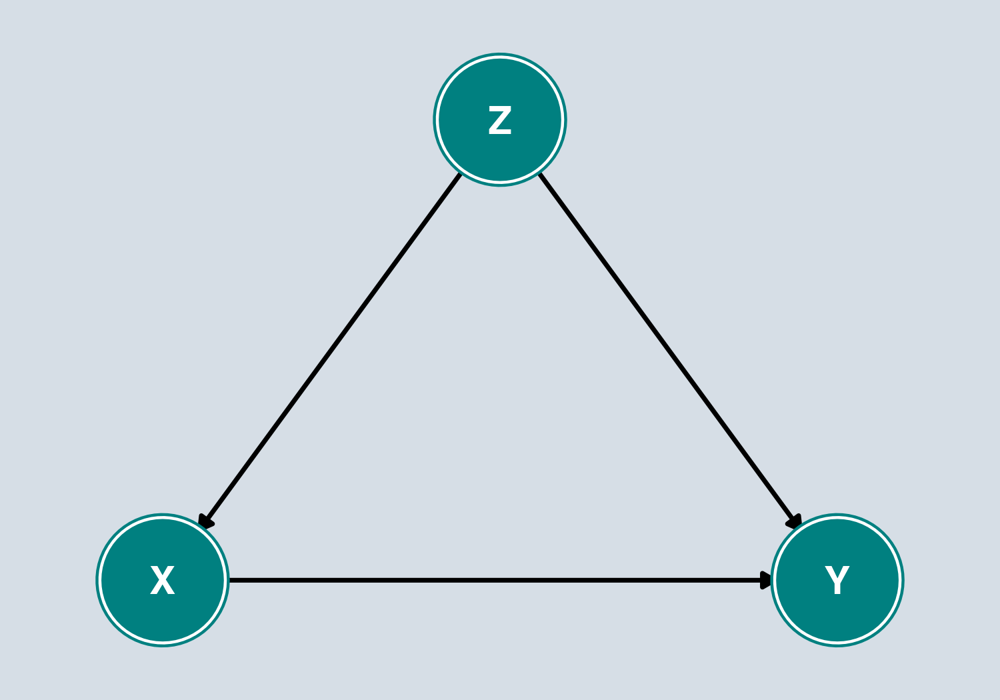
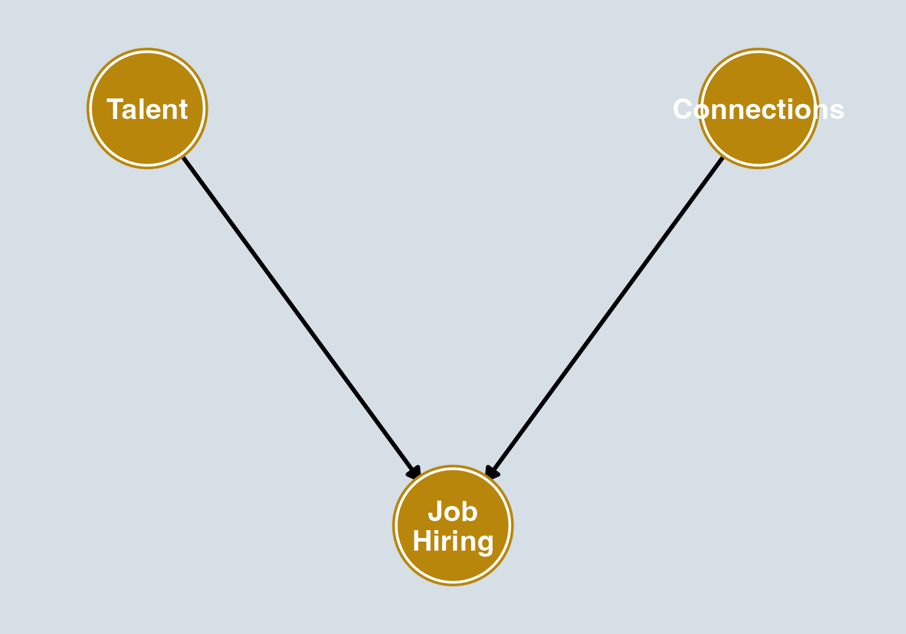
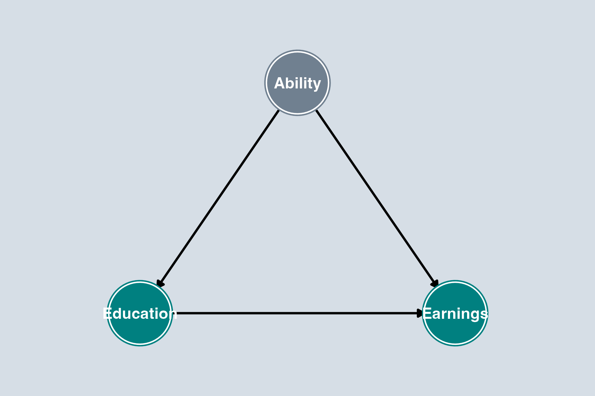
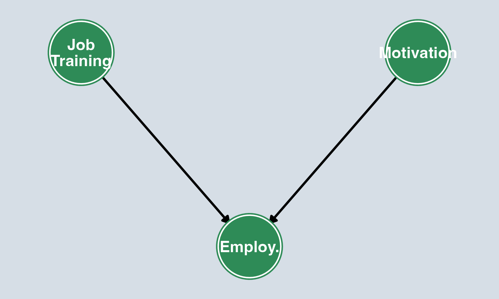
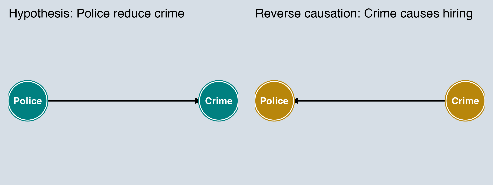
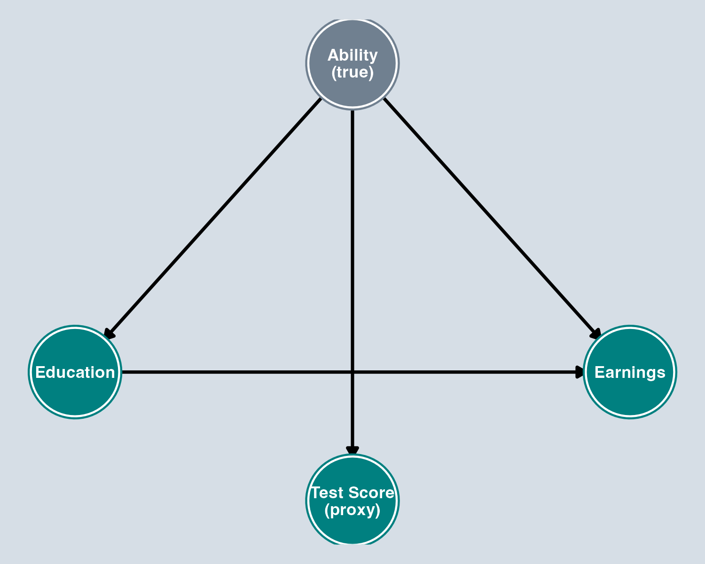
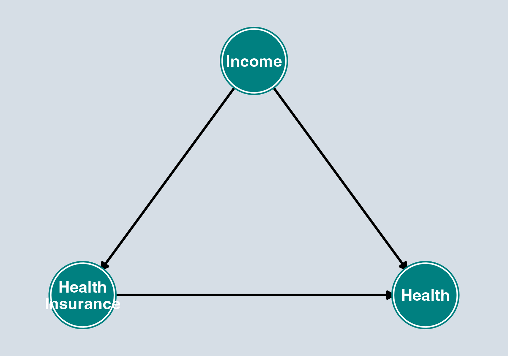
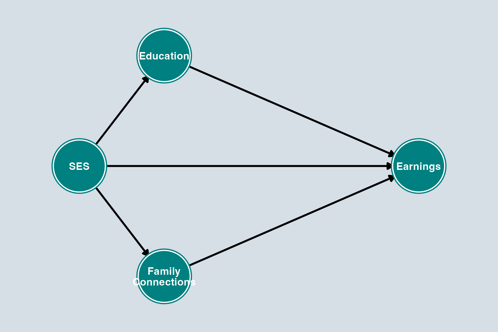

Directed Acyclic Graphs (DAGs)
Spring 2026
By the end of this lecture, you will be able to:
Reading
Huntington-Klein, The Effect: Chapters 6, 7, and 8 (available free at theeffectbook.net)
Every dataset we observe is produced by a data generating process (DGP) — the real-world laws, behaviors, and institutions that determine the values we see.
Our challenge as econometricians:
Identification
Identification is the process of figuring out what part of the variation in your data answers your research question.
Association
Two variables move together (correlation). \(X\) and \(Y\) are related statistically.
Causation
Changing \(X\) causes \(Y\) to change. Formally: if we could intervene to change \(X\), the distribution of \(Y\) would change as a result.
A directed acyclic graph (DAG) is a visual representation of a data generating process:
Key insight: Once we draw the DAG, we can mechanically determine which variables to control for to identify a causal effect.
Important assumption
Every variable and arrow that is not on the diagram is an assumption we’re making. Drawing a DAG forces you to be explicit about your identifying assumptions.
Node: A variable in the system.
Each circle represents a variable — either observed or unobserved.
Arrow: \(X \rightarrow Y\) means “\(X\) causes \(Y\).”


Variables:
Causal arrows:
\(X \rightarrow Y\) (or \(X \rightarrow M \rightarrow Y\))
Direct or indirect effect of \(X\) on \(Y\), with all arrows pointing away from \(X\).
These are good paths — they represent what we want to estimate.
Example: Class Size → Test Scores
\(X \leftarrow Z \rightarrow Y\)
\(X\) and \(Y\) are connected through a common cause \(Z\). These are bad paths — they create confounding.
Example: Class Size ← Wealth → Test Scores
Connection to OVB
A backdoor path is exactly what creates omitted variable bias. If \(Z\) is a common cause of \(X\) and \(Y\) and you leave it out of the regression, you have an open backdoor path — and OVB.
\(X \rightarrow Z \leftarrow Y\)
\(X\) and \(Y\) both cause \(Z\). These paths are closed by default — no confounding flows through them unless we make a mistake.
Example: Talent → Job Hiring ← Connections
No spurious relationship between Talent and Connections… unless we condition on who got hired.
Key Concept
A path is open if the relationship flows freely between variables along it. A path is closed if something blocks that flow.
| Path Type | Default Status | What controls do |
|---|---|---|
| Backdoor (\(X \leftarrow Z \rightarrow Y\)) | Open | Controlling for \(Z\) closes it |
| Collider (\(X \rightarrow Z \leftarrow Y\)) | Closed | Controlling for \(Z\) opens it |
Our goal: Close all bad (backdoor) paths while keeping good (causal) paths open.
Confounding
When \(X\) and \(Y\) share a common cause \(Z\), they are confounded. A regression of \(Y\) on \(X\) will pick up both the causal effect AND the confounding association.
In the class size example:
\[\text{Association} = \underbrace{\text{Causal Effect}}_{\text{Class Size} \rightarrow \text{Scores}} + \underbrace{\text{Confounding Bias}}_{\text{via Wealth}}\]
Remember omitted variable bias from Chapter 6?
OVB occurs when a variable that belongs in the regression is left out. In DAG language:
OVB ↔︎ Backdoor Paths
Every case of OVB is an open backdoor path. The DAG just gives you a visual way to see it — and to figure out what to control for.

Blocking a Backdoor Path
Control for (include in regression) the confounder \(Z\) to “close” the backdoor path \(X \leftarrow Z \rightarrow Y\).
In the class size example:
Think About It
If we regress Test Scores on Class Size without controlling for Wealth, will the class size coefficient be biased up or down?
Answer: The coefficient on class size is biased toward zero (understates the negative effect).
To identify the causal effect of \(X\) on \(Y\):
Backdoor Criterion
Control for a set of variables \(\mathbf{Z}\) such that:
In plain language:

Collider Bias
If you control for a collider — a variable caused by both \(X\) and \(Y\) — you open a previously closed path and create bias.
Bad Control: Mediator
If \(X \rightarrow M \rightarrow Y\), then \(M\) is a mediator. Controlling for \(M\) blocks part of the causal effect of \(X\) on \(Y\).
Example: Does education affect earnings?

Gray node = unobserved variable
Challenge: Ability is unobserved! We can’t directly control for it.
This is why economists turn to identification strategies — instruments, experiments, panel data — to close backdoor paths when confounders are unobservable.

The problem without randomization:
. . .
With an RCT:
Important
This is why randomized controlled trials (RCTs) are the gold standard for causal inference — they eliminate confounding mechanically.

Reverse Causation
Sometimes the arrow between \(X\) and \(Y\) runs in the opposite direction from what we assume.
In DAG terms: we’ve drawn the wrong DAG. The true DGP has the arrow reversed (or both arrows exist — simultaneity).

Gray = unobserved
Measurement Error
When we can’t perfectly measure a variable in our DAG, we introduce measurement error.

Does Income confound the effect of Health Insurance on Health?
To estimate the effect of Health Insurance on Health, should we control for Income?
Answer

Questions:
Answer
Think of a causal question from your own interest or research paper:
Tip from The Effect
Start with your treatment and outcome. Then ask: “What are all the things that cause my treatment? What are all the things that cause my outcome? Do any of those overlap?” Those overlapping causes are your confounders.
The DGP is what we’re trying to understand. A DAG is our best model of that process.
Association ≠ Causation. DAGs help us think systematically about why.
OVB = an open backdoor path. If a confounder is omitted, the path stays open and your estimate is biased.
The Backdoor Criterion is mechanical. Once you draw the DAG, you can determine what to control for.
Collider bias is real. Controlling for the wrong variable can introduce bias by opening a closed path.
Randomization is powerful. Random assignment closes backdoor paths by design.
These ideas connect directly to Chapter 9: Assessing Regression Validity:
The DAG framework gives you a visual language for diagnosing every threat to internal validity.
The backdoor criterion is actually a special case of a more general concept called d-separation.
You don’t need to know d-separation for this course — the backdoor criterion is the tool you’ll use. But if you want to go deeper, see The Effect Chapter 8 or Pearl (2009).
ECON3500 | Causal Diagrams